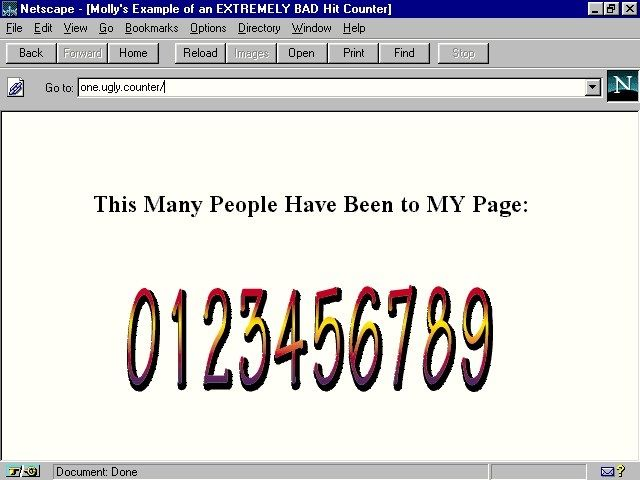
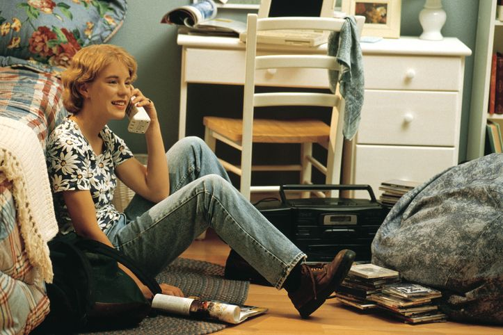

REGRESAR
CONTACTANOS
Los años 2000, años mosos des aplicaciones web
Hace algo más de 2o años, tenías un aparato-mastodonte conectado a un PC de sobremesa no menos
gigantesco que te hacía entrar a la red después de media hora de pitido chirriante.
Aquellos módem te llevaban a un mundo de chats, archivos midi, direcciones web con números y buscadores imposibles que hemos querido
recordar en esta galería (del terror) de lo más viejuno de Internet. Y después de hacer el ejercicio sí hemos podido decir con nostalgia aquello
de 'cualquier tiempo pasado fue peor'. Y mucho.
El contador de visitas

Qué era: Cuando entrabas en una página web, la mayoría de los dueños de los dominios habían puesto un contador de visitas que mostraba con
orgullo el número de personas que habían llegado hasta allí. Había muchos tamaños, desde el descomunal que llenaba toda la home hasta el que se colocaba
discreto en un pequeño módulo.
Visto años después... Resulta bastante feo y molesto estéticamente, y no entendemos qué puede aportar más allá del ego del
dueño para enseñarnos lo bien que le va,
¿Lo recuperamos? No. Pero hay muchas páginas que todavía siguen teniéndolo o
incluso incorporándolo de nuevas, no es de los elementos del internet
noventero completamente desterrado.
Telenofo e internet

Qué era: Cuando conectabas tu módem pleistocénico, no se podía hablar por teléfono porque iban por la misma línea. Eran clásicos los
gritos de: "¡Apaga ya ese cacharro, que quiero hablar por teléfono!" generalmente procedente de un padre/madre muy, pero que muy enfadado/a.
Visto años después... Es difícil de creer, pero teníamos que elegir entre hablar por teléfono o descubrir ese maravilloso
mundo que el ordenador nos estaba comenzando a mostrar.
¿Lo recuperamos? No. Aunque está claro que algo de esto tiene que ver en todos aquellos que se plantean, que nos planteamos, la desconexión digital.
Igual todo a la vez es demasiado.